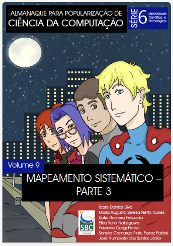
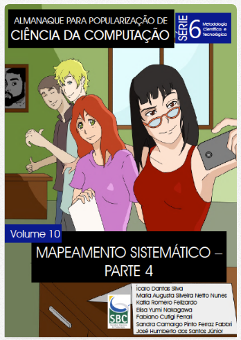
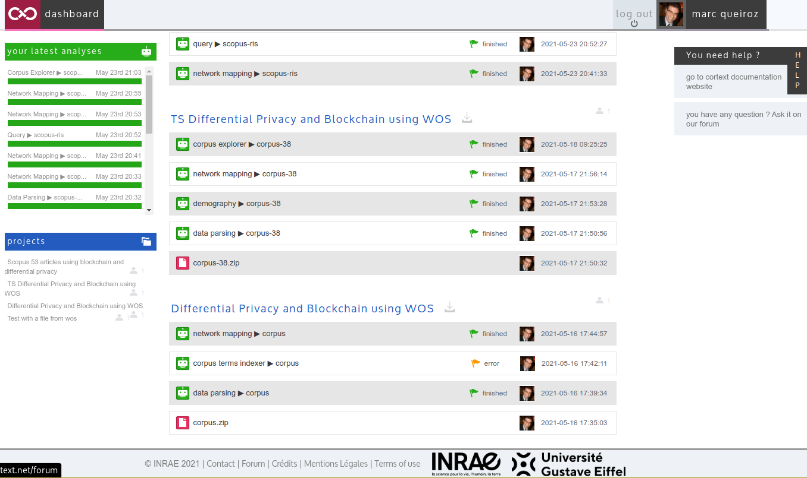
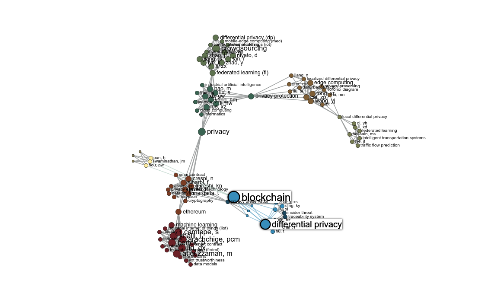
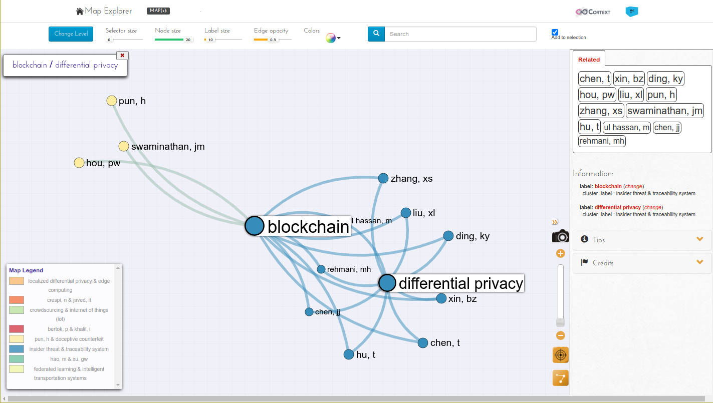
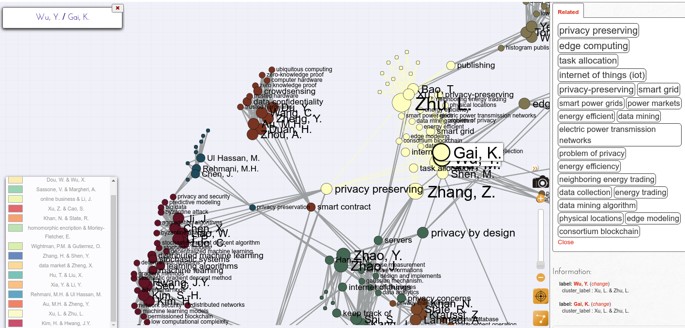
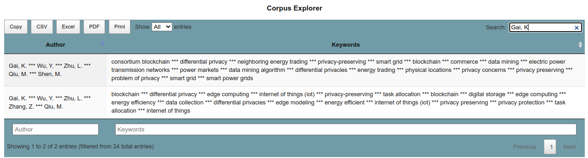
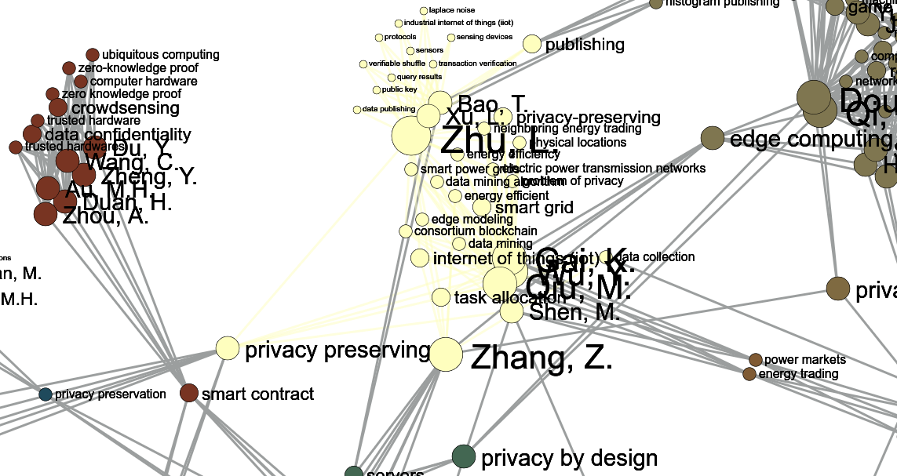
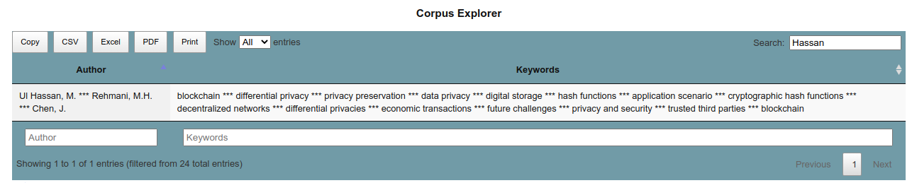
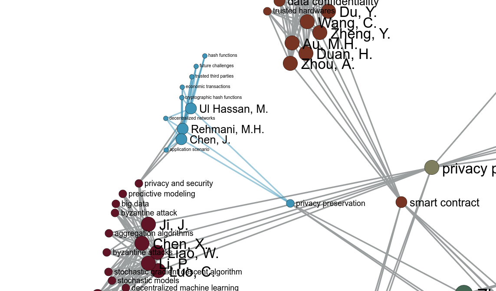

name: inverse layout: true class: center, middle, inverse --- # Network Mapping # Cortext Manager #### Prof. Marc Queiroz .footnote[ This presentation: https://marc-queiroz.github.io/unifil/standalone-presentations/slides/cortext-manager/index.html ] --- layout: false class: inverse, middle .left-column[ ## Systematic mapping ] .right-column[ - Systematic Mapping or Mapping Studies - Systematic Review .footnote[ Kai Petersen, Robert Feldt, Shahid Mujtaba, and Michael Mattsson. 2008. Systematic mapping studies in software engineering. In Proceedings of the 12th international conference on Evaluation and Assessment in Software Engineering (EASE'08). 68–77. ] ] --- layout: false class: inverse, middle .left-column[ ##### How to do a Systematic Mapping in practice? ] .right-column[ <img height="450px" src="./almanaque01.png"/> .footnote[ Site: http://almanaquesdacomputacao.com.br ] ] --- layout: false class: inverse, middle .left-column[ ##### How to do a Systematic Mapping in practice? ] .right-column[ .footnote[ Site: http://almanaquesdacomputacao.com.br ] ] --- layout: false class: inverse, middle .left-column[ ##### How to do a Systematic Mapping in practice? ] .right-column[  .footnote[ Site: http://almanaquesdacomputacao.com.br ] ] --- layout: false class: inverse, middle .left-column[ ##### How to do a Systematic Mapping in practice? ] .right-column[  .footnote[ Site: http://almanaquesdacomputacao.com.br ] ] --- layout: false class: inverse, middle .left-column[ ## Methology used to find a research theme ] .right-column[ - Term search - Citation Maps .footnote[ FELIZARDO, K. R. et al. Using visual text mining to support the study selection activity in systematic literature reviews GUESSI, M. et al. A systematic literature review on the description of software architectures for systems of systems MENDES, E. et al. When to update systematic literature reviews in software engineering ] ] --- layout: false class: inverse, middle .left-column[ ## Base of knowledge ] .right-column[ - The two main bibliographic databases DBs, can be accessed by Capes Portal - WoS, Web of Science from Clarivate Analytics - Scopus from Elsevier .footnote[ PRANCKUTÈ, R. Web of science (wos) and scopus: The titans of bibliographicinformation in today’s academic world ] ] --- layout: false class: inverse, middle .left-column[ Search string ] .right-column[ - Search string used at WoS to generate a corpus-based study - TS=("blockchain" and "differential privacy") .footnote[ ] ] --- layout: false class: inverse, middle .left-column[ Cortext a bibliographic tool ] .right-column[ - Cortext: Data analysis platform for citizens and researchers - Manager: https://managerv2.cortext.net/ - Docs: https://docs.cortext.net/ .footnote[ ] ] --- layout: false class: inverse, middle .left-column[ Dashboard example ] .right-column[  .footnote[ ] ] --- layout: false class: inverse, middle .left-column[ Map explorer example ] .right-column[  .footnote[ ] ] --- layout: false class: inverse, middle .left-column[ Map explorer example ] .right-column[  .footnote[ ] ] --- layout: false class: inverse, middle .left-column[ Discussion ] .right-column[ <!--Find authors that are related by key terms--> Based on the corpus constructed on your search using WoS or Scopus, the tool can show a network of relations between the articles and the authors. Find who are the relevant authors from WoS and Scopus corpus. .footnote[ Prof. Gai, K. profile: https://cs.bit.edu.cn/szdw/jsml/fjs/gkk_20180621115652294038/index.htm ] ] --- layout: false class: inverse, middle .left-column[ Discussion ] .right-column[  .footnote[ ] ] --- layout: false class: inverse, middle .left-column[ Exploring ] .right-column[ Example: Who are the authors related to Gai, K? .footnote[ ] ] --- layout: false class: inverse, middle .left-column[ Exploring ] .right-column[  .footnote[ Prof. Zhu, L. profile: https://cs.bit.edu.cn/szdw/jsml/js/zlh/index.htm ] ] --- layout: false class: inverse, middle .left-column[ Cluster ] .right-column[  .footnote[ ] ] --- layout: false class: inverse, middle .left-column[ ## Ul Hassan, M ] .right-column[  .footnote[ Prof. Ul Hassan, M.: https://www.muneebulhassan.com/ ] ] --- layout: false class: inverse, middle .left-column[ ## Cluster ] .right-column[  .footnote[ ] ] --- layout: false class:inverse,center,middle # REALTIME EXPERIENCE...